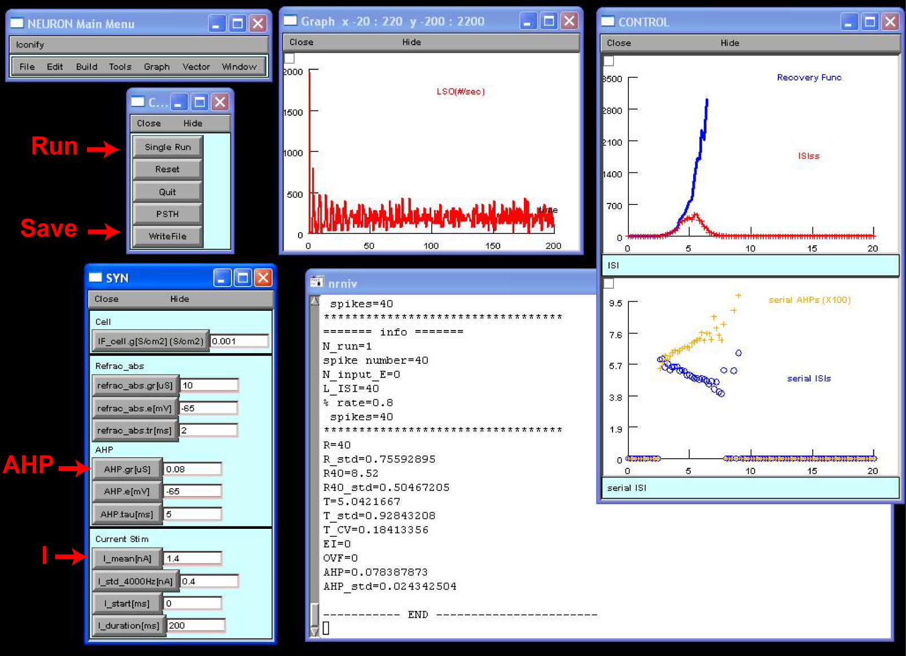
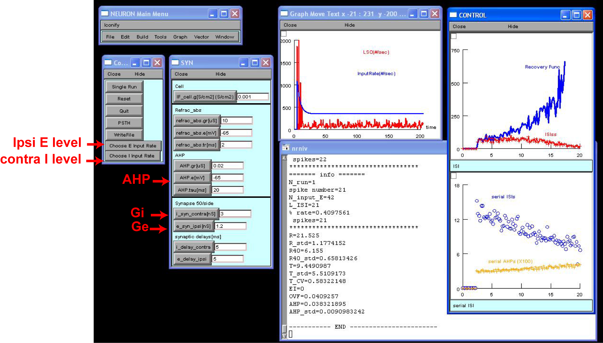

Demonstrations
This is the README for the model associated with the paper:
Zhou Y, Colburn HS (2010) A modeling study of the effects of membrane
afterhyperpolarization on spike interval statistics and on ILD
encoding in the lateral superior olive. J Neurophysiol 103:2355-71
This model was contributed by Yi Zhou.
A: Introduction
This simulation study investigated how membrane afterhyperpolarization
(AHP) influences spiking activity of neurons in the Lateral Superior
Olive (LSO). The model incorporates a general integrate-and-fire
spiking mechanism with a first-order adaptation channel. Simulations
focus on differentiating the effects of GAHP, tau_AHP, and input strength
on (1) spike interval statistics, such as negative serial correlation
and chopper onset, and (2) neural sensitivity to interaural level
difference (ILD) of LSO neurons. The model simulated
electrophysiological data collected in cat LSO (Tsuchitani and
Johnson, 1985). The complete set of simulation results were reported
in Zhou and Colburn (2010).
B: Download
This model was written in the NEURON simulation environment. After
installing NEURON, download and unzip the model package
LSO_ZhouColburn.zip to a local directory (e.g., C:/Neuron/LSO). Use
nrnivmodl to compile mod files, and then execute the main NEURON
programs (LSO_current_input.hoc or LSO_synaptic_input.hoc). The LSO
model neuron receives synaptic inputs whose firing rate functions are
stored in the input directory, e.g., "C:/Neuron/LSO/input". The
simulation results are saved in the output directory, e.g.,
"C:/Neuron/LSO/output". Two Matlab scripts in the model package,
func_current_stim.m and func_syn_stim.m, provide example commands for
data importing and plotting.
System Requirements:
NEURON program. Please refer to the general NEURON documentation
(http://www.neuron.yale.edu/neuron/docs) for furtherinstructions on
compiling mod files and launching hoc files on different operating
systems. Matlab software (http://www.mathworks.com).
C: Model Descriptions
Cell Model:
An LSO cell was simulated using a modified leaky integrate-and-fire
(LIF) model containing a capacitance Cm, a leak conductance GL, and
two time-varying conductance-based channels, Gabs and gAHP(t), which
produced the absolute and relative refractory periods, respectively,
for a model cell. After the absolute refractory period (t_abs), the
conductance of the adaptation channel gAHP(t) was increased by GAHP
and decayed exponentially toward zero with a time constant
tau_AHP. Responses of four model cells were tested in modeling, which
have small or large GAHP and short or long tau_AHP. (See Table I in
Zhou and Colburn, 2010.)
Input Model:
Stimulation was provided through either current injection (which
simulated the ipsilateral-alone stimulation) or through
synaptic-conductance channels (which simulated the combined effects of
ipsilateral and contralateral acoustic stimulation).
- The current stimulation was implemented in LSO_current_input.hoc. The
model cell received a random discrete current at a sampling rate of
4000 Hz. The amplitude of the current within each sample period (0.25
ms) was a Gaussian random variable with a mean of I and an SD of
sigma_I; and both I and sigma_I were time-invariant.
- The synaptic stimuation was implemented in
LSO_synaptic_input.hoc. Mathematically generated spike trains
simulated the ipsilateral excitatory and contralateral inhibitory
input spike trains (50 per side) to a LSO neuron. The input spike
times were loaded during NEURON simulation. The excitatory and
inhibitory synaptic time constant was 1ms.
D: Simulations
Example test 1: Stochastic current injection
Run LSO_current_input.hoc to launch the screen below. The command and
parameter panels are shown on the left and the three result panels are
shown on the right. On the parameter panels, shown from the top to
bottom shown the leak conductance, Gabs and t_abs, AHP channel, and
injecting current properties.
Specify the AHP channel and current properties. The default setting is
those of the model cell 4 (GAHP =0.08uS and tau_AHP=5ms). The default
current input has I_mean of 1.4nA and sigma_I of 0.4nA. The values of
passive leak conductance and absolute refractory period (2ms) were
those reported in Zhou and Colburn (2010).
Hit Run. Shown on the middle result panel is the PSTH, and those on
the right from top to bottom are the recovery function, the
inter-spike interval histograms of the steady state of responses (>40
msec), the serial dependence of GAHP, and the serial dependence of
interspike intervals. Methods of data analyses are given in Zhou and
Colburn (2010).
Hit WriteFile, which saves eight data files into the subfolder
/output. Each file was named after AHP channel and input current
parameters.
Run Matlab script func_current_stim.m, which plots the results of all
4 model cells in response to current stimulation with I_mean =1.4nA
and sigma_I = 0.4nA.

Example test 2: Synaptic stimulation with binaural EI inputs
Run LSO_synaptic_input.hoc to launch the screen below. Main procedures
are identical to the program shown above. The default setting used the
model cell 1 (GAHP =0.02 uS and tau_AHP=20 ms). The peak conductance
of excitatory (Ge) and inhibitory (Gi) conductance are 3ns and 1.2ns,
respectively. This setting yields a net zero synaptic current at the
spiking threshold (i.e., balanced excitation and inhibition). See
Methods in Zhou and Colburn (2010) for more details.
To specify an ILD, click Choose E Input Rate and then choose from the
pull-down menu a desired ipsilateral (excitatory) sound level. Do the
same for contralateral (inhibitory) sound level.
Hit Run. The results shown on the screen were obtained by using
E=50dB and I=10dB.
Hit WriteFile, which saves eight data files into the subfolder
/output. Each file was named after AHP channel and E/I level. The
sound pressure level from 0 to 70dB are coded by letters A to H,
respectively.
Run Matlab script func_syn_stim.m, which plots the results of the 4
model cells in response to binaural inputs with E=50dB and I=10dB.

References
Tsuchitani C, Johnson DH (1985). The effects of ipsilateral tone burst
stimulus level on the discharge patterns of cat lateral superior
olivary units. J Acoust Soc Am 77: 1484-1496.
Zhou Y and Colburn HS (2010). "Effects of membrane
afterhyperpolarization on discharge interval statistics: A model study
of responses of lateral superior olive neurons to ipsilateral and
bilateral acoustic stimuli," J. Neurophysiol. 103: 2355-2371.
Contact
Yi Zhou (zhouyi at jhu.edu)